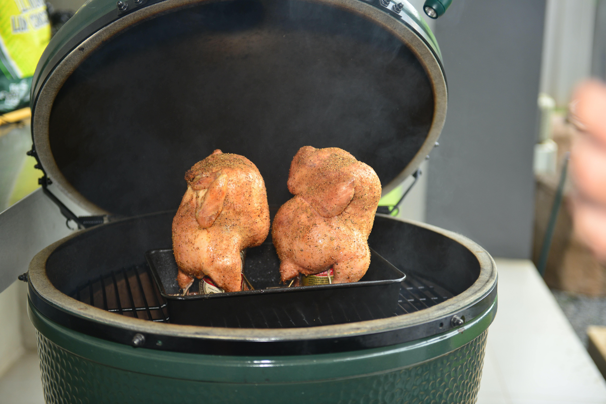

Recommended Food: Beer Can Chicken

You must bring tons of cold beer in this sunny day, right?
Then, why don't you try this food?
Ingredients
- (4-pound) whole chicken
- 2 tablespoons vegetable oil
- 2 tablespoons salt
- 1 teaspoon black pepper
- 3 tablespoons of your favorite dry spice rub
- 1 can beer
Steps
- Remove neck and giblets from chicken and discard.
Rinse chicken inside and out, and pat dry with paper towels.
Rub chicken lightly with oil then rub inside and out with salt, pepper and dry rub. Set aside.
- Open beer can and take several gulps (make them big gulps so that the can is half full).
Place beer can on a solid surface. Grabbing a chicken leg in each hand, plunk the bird cavity over the beer can.
Transfer the bird-on-a-can to your grill and place in the center of the grate, balancing the bird on its 2 legs and the can like a tripod.
- Cook the chicken over medium-high, indirect heat (i.e. no coals or burners on directly under the bird),
with the grill cover on, for approximately 1 1/4 hours or until the internal temperature registers
165 degrees F in the breast area and 180 degrees F in the thigh, or until the thigh juice runs clear when stabbed with a sharp knife.
Remove from grill and let rest for 10 minutes before carving.